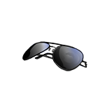
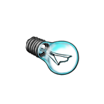
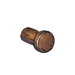
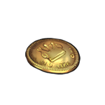
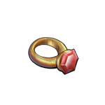

Получено: файл; исходный URL. Оригинальные байты, полученные по ссылке; идентичность архиву не подтверждена.

Редкая коллекция
ВКонтакте; дата источника не указана- Тип
- Коллекции
- Версия и дата
- ВКонтакте; дата источника не указана
Элементы коллекции
















Данные по источнику · ВКонтакте · дата источника не указана
Предварительно: один источник; требует сверки. Требуется сверка.
- Награда
- 10 камней, 10 брёвен и 150 опыта
- Где копать
- Склеп, волшебный кролик, камнетёсы и дровосеки, пристани на остров Любви и Секретный, вазы, фонари, деревья, камни
- Состав (источник Zombie-island)
- Тёмные очки; Целая лапочка; Пробка; Монета; Колечко.
- Награда (источник Zombie-island)
- 10 Камни; 10 Бревна; 150 Опыт.
- Где копать Редкую коллекцию в Зомби Ферме лопатами
- Пара дровосе с мозгами; Пара камнете с мозгами; Дровосек; Дровосек с мозгами; Пара Дровосеков; Камнетес; Камнетес с мозгами; Пара Камнетесов; Остров Любви; Склеп; Волшебный кролик; Маленькая ёлочка; Фонарь; Ваза; Тюльпаны красные; Тюльпаны голубые; Тюльпаны розовые; Тюльпаны белые; Тюльпаны желтые; Фиалки оранжевые; Фиалки красные; Фиалки голубые; Фиалки фиолетовые; Лилии красные; Лилии голубые; Лилии розовые; Лилии белые; Лилии желтые; Столб раз; Столб два; Старт; Марафон 5; Марафон 15; Марафон 25; Марафон 35; Марафон 40; Финиш; Таверна; Весенняя ваза 3; Весенняя ваза 2; Весенняя ваза 1; Яблочный автомат; Вишнёвый автомат; Лимонный автомат; Мандариновый автомат; Чучело за зомбаксы; Чучело.
- Редкую коллекцию приносят Кладоискатели
- Кладоискатель; Кладоискатель с мозгами.
- Редкая коллекция выпадает из Секретного клада и простого Сундука Чудовища
- Секретный клад; Сундук Чудовища.
- Редкую коллекцию можно найти в ценностях и сокровищах Зомби Фермы
- Клубничное; Простое яйцо; Коллекционная посылка; Коллекционный; Коллекционер.
- Редкая коллекция попадается на Пиратских островах Зомби Фермы
- Пиратский сундук.
Данные по источнику · ВКонтакте, ZombieS Forever · дата редакции не установлена
Предварительно: Историческая фанатская страница; независимость от других источников не установлена. Возможны различия версий и дат.. Требуется сверка.
Данные по источнику · браузерная версия; платформа не указана · дата редакции не установлена
Предварительно: Содержимое списка: изображения и колонки могут терять смысл при извлечении текста; отдельная страница и дата не проверены. Подписи alt иногда ошибочны.. Требуется сверка.
- Текст карточки из каталога
- 10 камней, 10 брёвен и 150 опыта Тёмные очки Целая лампочка Пробка Монета Колечко 1. Редкую коллекцию приносит Кладоискатель; 2. Выпадает из простых и с клубничных яиц. 3. Где копать Редкую коллекцию: Склеп, Волшебный кролик, Камнетесы, Дровосеки, Сторож, Пирс, Ваза, цветочный декор: лилии красные, тюльпаны розовые, тюльпаны красные, тюльпаны голубые, тюльпаны белые фиалки оранжевые, фиалки красные, фиалки голубые
Данные по источнику · Мой Мир (Mail.ru); историческая таблица · дата редакции не установлена
Предварительно: Источник сам использует знаки вопроса; не следует считать такие места подтверждёнными. Возможны изменения патча и платформы; независимость от других справочников не доказана.. Требуется сверка.
Данные по источнику · браузерная версия; на сайте указана игра ВКонтакте · дата редакции не установлена
Предварительно: Исторический текст; сильно совпадает со справкой Zommbie.at.ua, независимость не доказана. Отрицания и доступность могут измениться с патчем.. Требуется сверка.
- Где искать по странице «Зомбастики»
- Склеп, пристань на остров Любви, камнетес, дровосек, фонарь, красные лилии, голубые лилии, камни острова Майя.
Данные по источнику · историческая браузерная версия, платформа не указана · 10.01.2014 — дата в каталоге; дата редакции материала неизвестна
Предварительно: Фанатский список без вероятностей и уточнения площадки; независимость от других источников не установлена.. Требуется сверка.
- Где искать по списку сайта
- Склеп, пристань на остров Любви, камнетес, дровосек, фонарь, красные лилии, голубые лилии, камни острова Майя
- Оговорка
- Список может относиться к разным условиям, инструментам и периодам игры; не доказывает гарантированное выпадение. Заявления «только» и «невозможно» относятся лишь к времени и версии источника.
Связанные сущности
нет проверенных связей — требуется сверка.
Источники
- прочитано; проверка 2026-11-21
- прочитано: Zombie-island.moy.su; проверка 2026-11-21
- ZOMBIA: прочитана карточка в списке
- Ссылка на отдельную страницу; отдельно не проверена
- Zombiemail: строка таблицы коллекций; Мой Мир
- Зомбастики: прочитана соответствующая строка; возможная копия другого справочника
- zommbie.at.ua: где искать коллекции